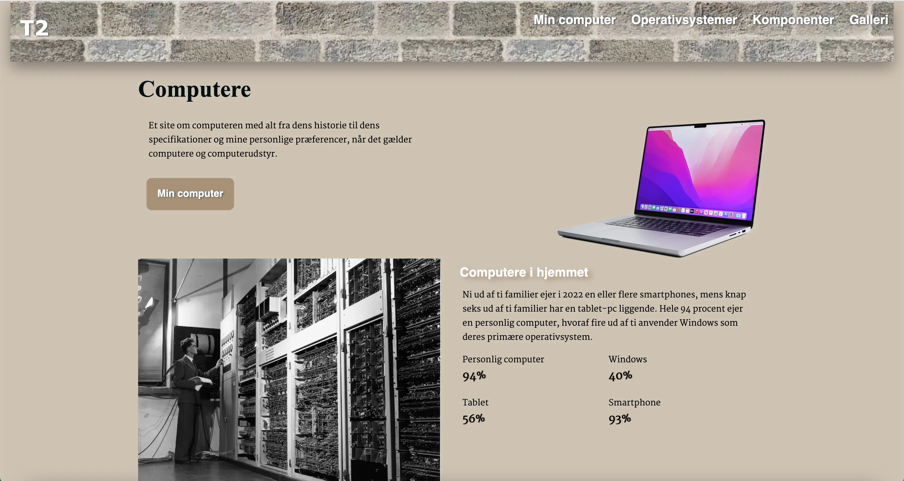
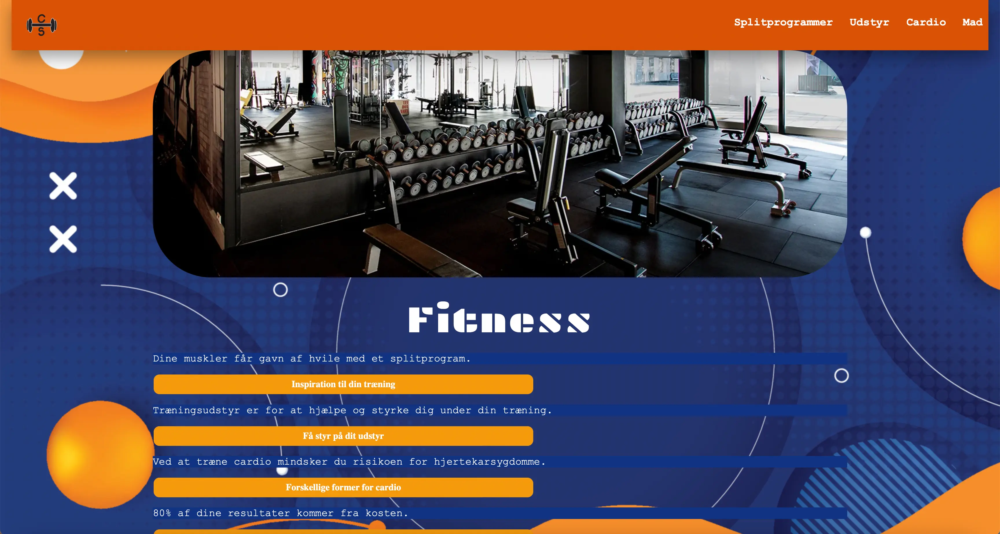

TEMA 2 grundlæggende web
02.01.02
Website
Se websitet her I denne opgave skulle vi kode og designe et responsivt website, hvor vi blot skulle indsætte bestemte billeder og tekst, som en del af studiestartsprøven.
Vi skulle anvende centrale principper, teorier og metoder til design af brugergrænseflader. Her lærte vi om html, css, filezilla, filformater, grid, flex, farveharmonier og typografier til at udarbejde et responsivt wesbsite på basis af det udleveret materiale.
Jeg valgte at designe mit i jord-farver, da jeg mente det gav et rolig udtryk. I min header, valgte jeg et billede af en beige murstensvæg, da jeg mente at headeren og baggrundsfarven gik godt med hinanden, uden nogen af dem, tog fokus fra sidens indhold.
Vi skulle til sidst anvende frontend-teknologier til udvikling og validering af brugergrænseflader.
02.02.01
Emnesite
Se websitet her I denne opgave skulle vi endnu en gang kode vores eget responsive site, om et valgfrit emne på 2-6 sider. Vi udviklede et design, fra den valgte stil, hvoraf vi udarbejdede moodboards, styletiles, wireframes og mockups.
Vi anvendte samme principper, metoder og nye lærte færdigheder fra tidligere opgave, til at fuldføre denne opgave. Vi lærte derudover også om ophavsrettigheder, billedstil, komposition, gestalt og farveharmonier.
Jeg valgte memphis stilen, da jeg gerne ville udfordre mig selv, da jeg normalt foretrækker den minimalistiske stil. Jeg ville se hvad jeg kunne få ud af at vælge denne stil, samt kontrastfarverne blå og orange. Farvevalget bundede også i mit træningscenters farver, SATS.